10 Modelos para Jenni
Su trabajo se titula “Respuestas espaciales y temporales de Subulo gouazoubira ante la presencia de tres mamíferos introducidos en Uruguay.”
El objetivo del presente estudio fue evaluar el impacto de tres mamíferos introducidos (el jabalí Sus scrofa, el ciervo axis Axis axis y los perros de movimiento libre Canis familiaris) sobre la selección de hábitat y los patrones diarios de actividad del guazubirá (Subulo gouazoubira), en áreas protegidas del este de Uruguay
A tener en cuenta:
- A nivel de cámara y sistema:
- Tasas de registros de:
- Jabalí Sus scrofa
- Ciervo Axis axis
- Perros de movimiento libre Canis familiaris
- Cobertura arbórea
- Tasas de registros de:
- Fase lunar (fracción de luna iluminada)
Estos datos son los que necesito para correr el modelo, en mi tesis de grado no se contempla las tasas de registro de Jabalí ni de Ciervo Axis. Por lo que en primer lugar se obtienen dichos datos.
10.1 Preparación de datos
En primer lugar obtengo la tasa de registro de ciervo axis y jabalí a nivel de cámara y sistema. Para esto cargo los datos de la planilla general y prosigo.
load("data/planilla_general.RData")
data <- datos %>%
select(site, system = station, camera, datetime, sp = species)10.1.1 Tasa de registro
10.1.1.1 A nivel de sistema
tr_data <- data %>%
filter(sp %in% c("Sscr", "Aaxi")) %>%
mutate(system = str_sub(camera, 1, 4)) %>%
select(system, camera, sp)
# En primer lugar se busca el esfuerzo para cada sistema.
system_effort <- read_rds(file = "data_processed/camera_data.RData") %>%
mutate(system = str_sub(camera, 1, 4)) %>%
select(system, camera, effort) %>%
group_by(system) %>%
summarise(effort = sum(effort))
# Esfuerzo de todos los sitemas.
tr_system <- tr_data %>%
select(system, sp) %>%
group_by(system, sp) %>%
summarise(count = n()) %>%
ungroup()
# Luego se contabiliza la cantidad de registros independientes de cada especie en los sistemas.
tr_system <- tr_system %>%
left_join(system_effort, by = join_by(system)) %>%
group_by(system, sp) %>%
summarise(tr_system = count/effort)Y se obtiene:
10.1.1.2 A nivel de camara
# En primer lugar se carga el esfuerzo para cada camara.
camera_effort <- read_rds(file = "data_processed/camera_data.RData") %>%
select(camera, effort)
# Se cuenta la cantidad de regitros independientes en cada cámara para la especies de interés.
tr_camera <- tr_data %>%
select(camera, sp) %>%
group_by(camera, sp) %>%
summarise(count = n())
# Se realiza el calculo de la tasa de registro.
tr_camera <- tr_camera %>%
left_join(camera_effort, by = join_by(camera)) %>%
group_by(camera, sp) %>%
summarise(tr_camera = count/effort) %>%
mutate(system = substr(camera, 1, 4))Se unen los datos en una tabla única para mejor organización, en ella existen los valores de la tasa de registro tanto a nivel de sistema como de camara.
tr_results <- tr_camera %>%
left_join(tr_system, join_by(system, sp)) %>%
select(system, camera, sp, tr_system, tr_camera)Y se obtiene:
Por último se añaden estos valores a la tabla general.
# Obtener todas las cámaras con registro de cualquier especie.
all_cameras <- data %>%
select(camera) %>%
pull()
# Modificar resultados de TR y hacerlos "anchos"
tr <- tr_results %>%
pivot_wider(names_from = sp, values_from = c(tr_system, tr_camera), names_sep = "_")
# Verificar qué camaras son las que faltan en el cálculo de la tr, ya que no poseen registros ni de Btau ni de Cfam
missing_cameras <- setdiff(all_cameras, tr$camera)
# Creamos un tibble con estos datos faltantes
missing_tibble <- tibble::tibble(
system = substr(missing_cameras, 1, 4),
camera = missing_cameras,
tr_system_Aaxi = 0,
tr_camera_Aaxi = 0,
tr_system_Sscr = 0,
tr_camera_Sscr = 0
)
# Y los unimos en un mismo set de datos
tr <- bind_rows(tr, missing_tibble)
# Reemplzamos todos los NA por 0.
tr[is.na(tr)] <- 0
load("data_processed/datos_procesados_v4.RData") # Se carga planilla general
data <- data %>%
mutate(system = substr(camera, 1, 4)) %>%
left_join(tr, join_by(system, camera)) %>%
select(site, system, camera, sp, datetime, everything()) %>%
rename(tr_aaxi_sys = tr_system_Aaxi,
tr_aaxi_cam = tr_camera_Aaxi,
tr_sscr_sys = tr_system_Sscr,
tr_sscr_cam = tr_camera_Sscr)Por último solo me quedo con los datos de S. gouazoubira.
Se tiene un total de 275 registros y en la siguiente gráfica se puede ver la cantidad por cámara.
10.1.2 Estado de los datos
- Tasa de registro de Perro a nivel de cámara y sistema
- Tasa de registro de Jabalí a nivel de cámara y sistema
- Tasa de registro de Ciervo Axis a nivel de cámara y sistema
- Cobertura arbórea a nivel de cámara y sistema
- Iluminación de luna
La tabla con la que se cuenta luce así:
Falta la columna “periodo”, donde se especifica en qué categoría diel cae el registro.
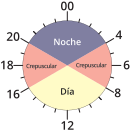
source("functions/convert_hours.R")
data <- data %>%
mutate(solartime_hms = hms(radians_to_hour(solar)),
periodos = case_when(
solartime_hms >= hours(20) | solartime_hms <= hours(4) ~ "nocturno",
solartime_hms > hours(4) & solartime_hms < hours(8) ~ "crepusculo-diurno",
solartime_hms > hours(16) & solartime_hms < hours(20) ~ "crepusculo-nocturno",
solartime_hms >= hours(8) & solartime_hms <= hours(16) ~ "diurno",
))
# Grafica para confirmar los periodos.
ggplot(data, aes(x = solar, y = 1, color = periodos)) + # Usar '1' como eje y solo para dispersión
geom_point() +
scale_x_continuous(breaks = seq(0, 2 * pi, by = pi / 2),
labels = c("0", "π/2", "π", "3π/2", "2π")) + # Etiquetas en radianes
labs(title = "Horarios Solares en Radianes",
x = "Hora Solar (radianes)",
y = "Registro") + # Etiquetas de los ejes
theme_minimal() +
theme(legend.title = element_blank())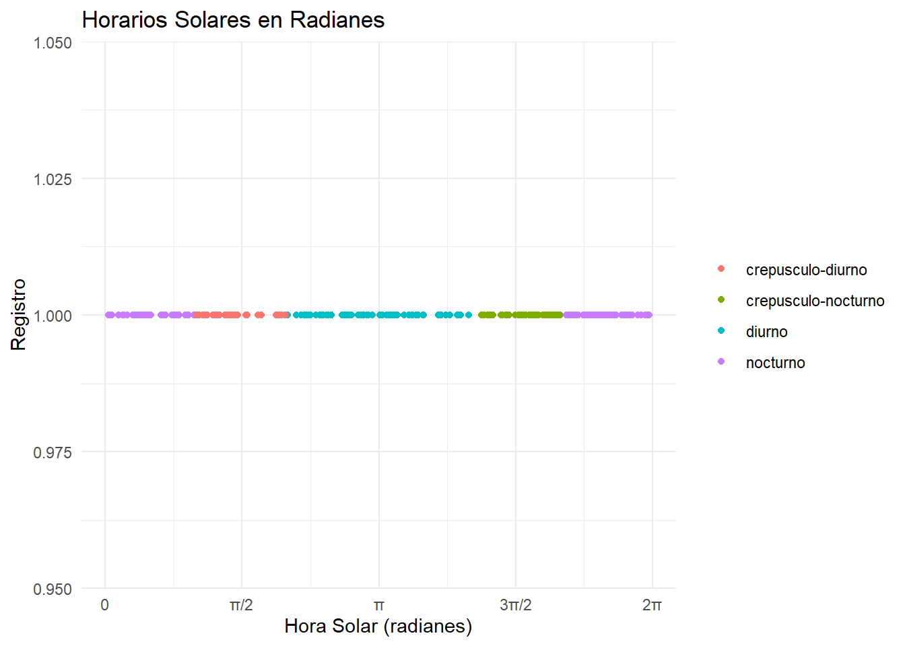
- \(0\): Medianoche
- \(\frac{pi}{2}\): Amanecer
- \(\pi\): Mediodía
- \(\frac{3 \pi}{2}\): Atardecer
Podemos ver también la cantidad de registros dentro de cada periodo:
data %>%
select(periodos) %>%
group_by(periodos) %>%
summarise(n = n()) %>%
arrange(-n) %>%
paged_table(.)Por último hay que formatear las columnas.
10.2 Modelo generalidades
| Atributo | Descripción | Tipo |
|---|---|---|
| system | Sistema | Nominal |
| camera | Nombre de la cámara trampa en que se registró esa observación | Nominal |
| periodo | Categoría diel en que se registra (diurno, nocturno, crepuscular-diurno, crepuscular-nocturno) | Ordinal |
| moon_illumination | Fracción de luna iluminada | Continuo |
| tr_btau_sys | Tasa de registros (tr) de ganado vacuno a nivel de sistema | Continuo |
| tr_btau_cam | Tasa de registros (tr) de ganado vacuno a nivel de cámara | Continuo |
| tr_cfam_sys | Tasa de registros (tr) de perros a nivel de sistema | Continuo |
| tr_cfam_cam | Tasa de registros (tr) de perros a nivel de cámara | Continuo |
| tr_sscr_sys | Tasa de registros (tr) de jabalí a nivel de sistema | Continuo |
| tr_sscr_cam | Tasa de registros (tr) de jabalí a nivel de cámara | Continuo |
| tr_aaxi_sys | Tasa de registros (tr) de ciervo Axis a nivel de sistema | Continuo |
| tr_aaxi_cam | Tasa de registros (tr) de ciervo Axis a nivel de cámara | Continuo |
| wood_sys | Proporción de bosque a nivel de sistema | Continuo |
| wood_cam | Proporción de bosque a nivel de cámara | Continuo |
| n_tech_sys | Cantidad de techos a nivel de sistema | Ordinal |
| n_tech_cam | Cantidad de techos a nivel de cámara | Ordinal |
10.3 Modelo utilizando brms
modelo_aditivo <- brm(
formula = bf(periodos ~ moon_ilumination +
tr_btau_sys + tr_btau_cam +
tr_cfam_sys + tr_cfam_cam +
tr_aaxi_sys + tr_aaxi_cam +
tr_sscr_sys + tr_sscr_cam +
wood_sys + wood_cam +
n_tech_sys + n_tech_cam +
(1 | system/camera)), # Efectos mixtos anidados
data = data,
family = categorical(refcat = "nocturno"), # familia multinomial con el nivel de referencia 'nocturno'
chains = 4, # número de cadenas
iter = 12000, # número de iteraciones
warmup = 2000, # número de iteraciones de calentamiento
control = list(adapt_delta = 0.95), # control para mejorar la convergencia
cores = 6,
threads = 12
)
save(modelo_aditivo, file = "./buckup/modelo_aditivo.RData")## Family: categorical
## Links: mucrepusculodiurno = logit; mucrepusculonocturno = logit; mudiurno = logit
## Formula: periodos ~ moon_ilumination + tr_btau_sys + tr_btau_cam + tr_cfam_sys + tr_cfam_cam + tr_aaxi_sys + tr_aaxi_cam + tr_sscr_sys + tr_sscr_cam + wood_sys + wood_cam + n_tech_sys + n_tech_cam + (1 | system/camera)
## Data: data (Number of observations: 275)
## Draws: 4 chains, each with iter = 12000; warmup = 2000; thin = 1;
## total post-warmup draws = 40000
##
## Multilevel Hyperparameters:
## ~system (Number of levels: 24)
## Estimate Est.Error l-95% CI u-95% CI Rhat Bulk_ESS Tail_ESS
## sd(mucrepusculodiurno_Intercept) 0.55 0.51 0.02 1.85 1.00 14990 18244
## sd(mucrepusculonocturno_Intercept) 1.32 0.96 0.06 3.62 1.00 8931 15871
## sd(mudiurno_Intercept) 1.15 0.90 0.05 3.37 1.00 10525 19488
##
## ~system:camera (Number of levels: 41)
## Estimate Est.Error l-95% CI u-95% CI Rhat Bulk_ESS Tail_ESS
## sd(mucrepusculodiurno_Intercept) 1.00 0.83 0.04 3.11 1.00 5813 8207
## sd(mucrepusculonocturno_Intercept) 1.51 1.01 0.08 3.84 1.00 5567 11227
## sd(mudiurno_Intercept) 1.72 0.99 0.18 4.07 1.00 6419 9818
##
## Regression Coefficients:
## Estimate Est.Error l-95% CI u-95% CI Rhat Bulk_ESS Tail_ESS
## mucrepusculodiurno_Intercept -3.05 1.33 -6.03 -0.80 1.00 23536 18682
## mucrepusculonocturno_Intercept -2.89 1.57 -6.32 -0.02 1.00 24806 22395
## mudiurno_Intercept -3.33 1.78 -7.32 -0.20 1.00 28155 22103
## mucrepusculodiurno_moon_ilumination 0.73 0.62 -0.48 1.97 1.00 53940 28869
## mucrepusculodiurno_tr_btau_sys 5.60 17.34 -31.02 38.12 1.00 17294 13747
## mucrepusculodiurno_tr_btau_cam -13.00 15.75 -45.05 17.47 1.00 17437 14158
## mucrepusculodiurno_tr_cfam_sys -386.75 495.31 -1377.77 600.61 1.00 18730 16181
## mucrepusculodiurno_tr_cfam_cam 107.34 174.41 -247.55 447.89 1.00 18867 16718
## mucrepusculodiurno_tr_aaxi_sys -12.68 11.09 -39.62 4.60 1.00 12682 9468
## mucrepusculodiurno_tr_aaxi_cam 9.05 9.07 -4.85 31.17 1.00 12069 9437
## mucrepusculodiurno_tr_sscr_sys 1.42 3.38 -5.26 8.27 1.00 21303 16866
## mucrepusculodiurno_tr_sscr_cam 1.38 1.27 -0.98 4.09 1.00 28759 17360
## mucrepusculodiurno_wood_sys 6.05 3.84 -0.26 14.84 1.00 14261 10969
## mucrepusculodiurno_wood_cam -2.70 2.44 -8.28 1.44 1.00 15264 11207
## mucrepusculodiurno_n_tech_sys 0.32 0.15 0.07 0.66 1.00 12478 15751
## mucrepusculodiurno_n_tech_cam -0.77 0.58 -2.05 0.26 1.00 13808 19045
## mucrepusculonocturno_moon_ilumination 0.61 0.58 -0.53 1.76 1.00 59992 30964
## mucrepusculonocturno_tr_btau_sys 17.72 12.60 -5.24 44.70 1.00 17953 16493
## mucrepusculonocturno_tr_btau_cam -17.71 12.05 -44.05 3.68 1.00 18722 16083
## mucrepusculonocturno_tr_cfam_sys 55.04 802.84 -1622.16 1619.70 1.00 16576 15432
## mucrepusculonocturno_tr_cfam_cam -110.64 300.60 -728.22 481.31 1.00 16789 16470
## mucrepusculonocturno_tr_aaxi_sys -6.90 13.61 -35.27 19.47 1.00 21525 18312
## mucrepusculonocturno_tr_aaxi_cam -5.23 11.52 -29.62 16.42 1.00 21071 16851
## mucrepusculonocturno_tr_sscr_sys -10.63 12.01 -40.83 5.30 1.00 15519 11459
## mucrepusculonocturno_tr_sscr_cam 6.97 5.58 -0.00 21.16 1.00 14038 10861
## mucrepusculonocturno_wood_sys 1.94 4.46 -6.60 11.36 1.00 14415 14540
## mucrepusculonocturno_wood_cam 2.43 2.70 -2.91 7.92 1.00 17230 18553
## mucrepusculonocturno_n_tech_sys 0.22 0.16 -0.04 0.58 1.00 11312 14541
## mucrepusculonocturno_n_tech_cam -0.24 0.61 -1.57 0.87 1.00 10871 15520
## mudiurno_moon_ilumination 1.07 0.53 0.04 2.11 1.00 58998 31144
## mudiurno_tr_btau_sys 6.23 11.64 -16.68 30.11 1.00 19857 19147
## mudiurno_tr_btau_cam -4.19 9.64 -22.71 15.88 1.00 19909 17943
## mudiurno_tr_cfam_sys 650.85 825.43 -872.21 2433.99 1.00 16710 14497
## mudiurno_tr_cfam_cam -335.43 328.45 -1072.19 241.09 1.00 17091 14524
## mudiurno_tr_aaxi_sys -4.99 13.17 -32.43 20.40 1.00 16166 14981
## mudiurno_tr_aaxi_cam 6.65 10.27 -10.90 29.68 1.00 16909 13794
## mudiurno_tr_sscr_sys -1.64 4.33 -11.45 6.09 1.00 18784 15258
## mudiurno_tr_sscr_cam 0.43 1.55 -2.50 3.80 1.00 24738 17632
## mudiurno_wood_sys -0.01 4.53 -9.01 9.01 1.00 17621 15629
## mudiurno_wood_cam 4.45 3.09 -0.90 11.36 1.00 14402 13369
## mudiurno_n_tech_sys -0.09 0.29 -0.79 0.37 1.00 22429 16444
## mudiurno_n_tech_cam -13.71 17.59 -58.32 -0.36 1.00 11160 6867
##
## Draws were sampled using sampling(NUTS). For each parameter, Bulk_ESS
## and Tail_ESS are effective sample size measures, and Rhat is the potential
## scale reduction factor on split chains (at convergence, Rhat = 1).En general, la iluminación lunar parece tener un impacto positivo en los periodos de actividad diurna, ya que su estimación para el periodo diurno es positiva y significativamente distinta de cero (1.07 [0.04, 2.11]). Esto sugiere que, a mayor iluminación lunar, Subulo gouazoubira tiene más probabilidad de estar activo durante el día.
Para las variables relacionadas con la presencia de vacas (tr_btau), los efectos no son tan claros. Las estimaciones para la actividad crepuscular diurna y nocturna muestran amplios intervalos de confianza que incluyen tanto efectos positivos como negativos, lo que indica que no podemos asegurar una relación directa entre la actividad de los ciervos y la presencia de vacas.
Algo similar ocurre con las otras animales domésticos y silvestres (tr_cfam, tr_aaxi, tr_sscr). Las estimaciones presentan incertidumbre considerable y no permiten conclusiones sólidas sobre su efecto en la actividad del guazubirá. Sin embargo, el hecho de que la actividad diurna parece estar más influenciada por tr_cfam_sys (650.85 [-872.21, 2433.99]) y tr_cfam_cam (-335.43 [-1072.19, 241.09]) sugiere que la presencia de perros podría estar afectando los patrones de actividad del Subulo gouazoubira, aunque no se puede confirmar esto con certeza debido a la alta variabilidad en los resultados.
Respecto a la cobertura boscosa (wood_sys, wood_cam), la actividad crepuscular diurna parece verse influenciada de manera positiva por la cobertura de bosques a nivel del sistema (6.05 [-0.26, 14.84]), lo cual indicaría una mayor probabilidad de actividad en zonas más arboladas. Sin embargo, a nivel de cámara (wood_cam), el efecto es negativo, aunque no es estadísticamente significativo (-2.70 [-8.28, 1.44]).
El número de techos (n_tech) también parece tener un efecto, aunque pequeño. A nivel del sistema, se observa una tendencia positiva para la actividad crepuscular diurna (0.32 [0.07, 0.66]), lo que podría sugerir que la presencia de mayor cantidad de techos en el área está correlacionada con un ligero aumento en la actividad del guazubirá durante el crepúsculo diurno.
Los resultados para el ciervo Axis a nivel de cámara y sistema no muestran un efecto claro y significativo en los distintos períodos de actividad. Los intervalos de credibilidad son amplios y todos contienen el valor cero, lo que indica que no hay evidencia suficiente para afirmar que la tasa de registro de ciervos Axis esté influyendo de manera significativa en los patrones de actividad en los diferentes períodos.
marginal_plots <- plot(conditional_effects(modelo_aditivo, categorical=TRUE))
#save(marginal_plots, file="buckup/marginal_plots_aditivo.RData")## $`moon_ilumination:cats__`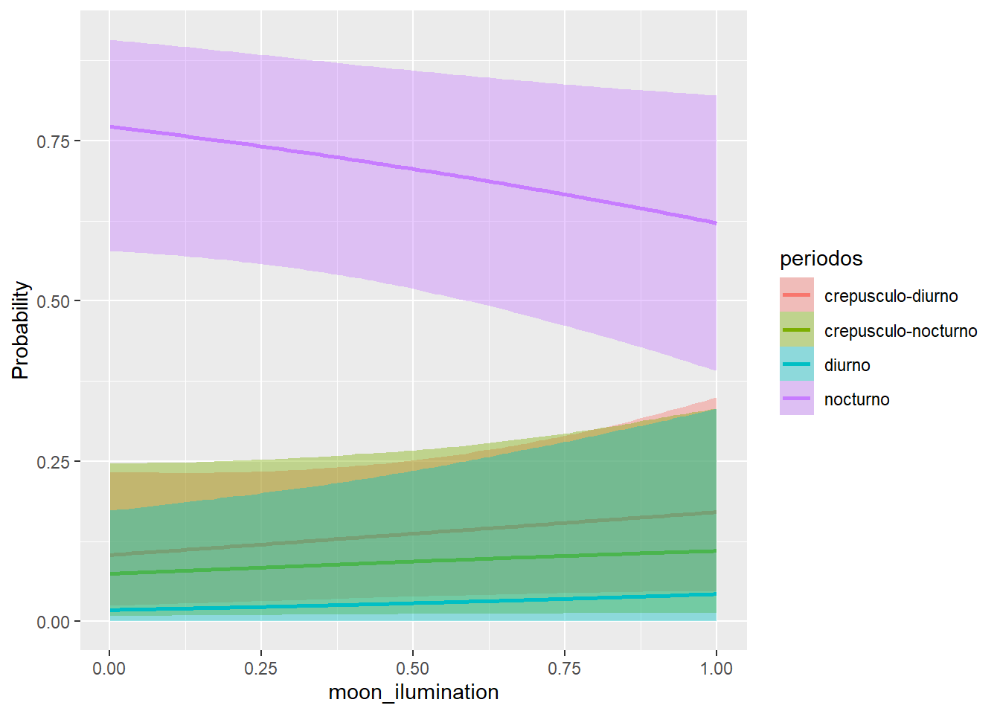
##
## $`tr_btau_sys:cats__`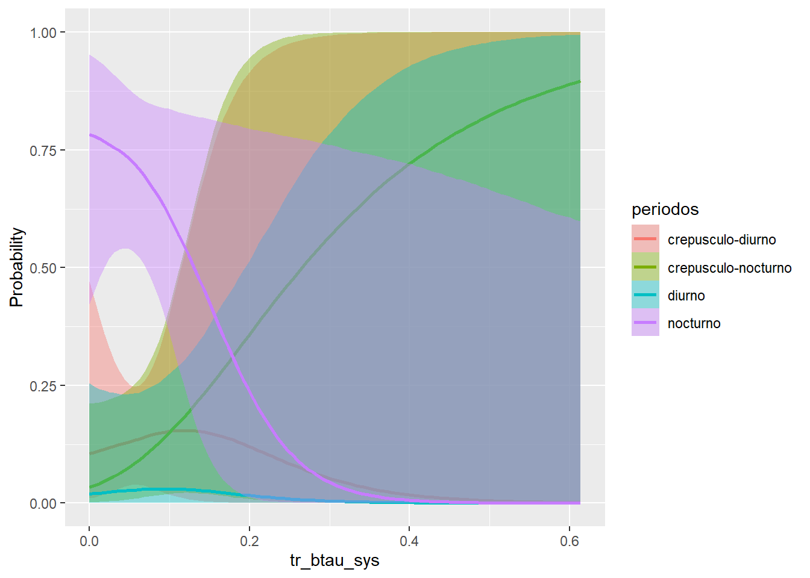
##
## $`tr_btau_cam:cats__`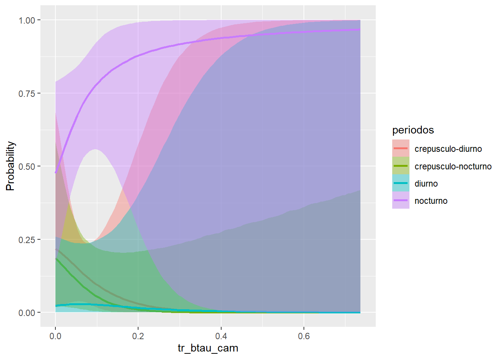
##
## $`tr_cfam_sys:cats__`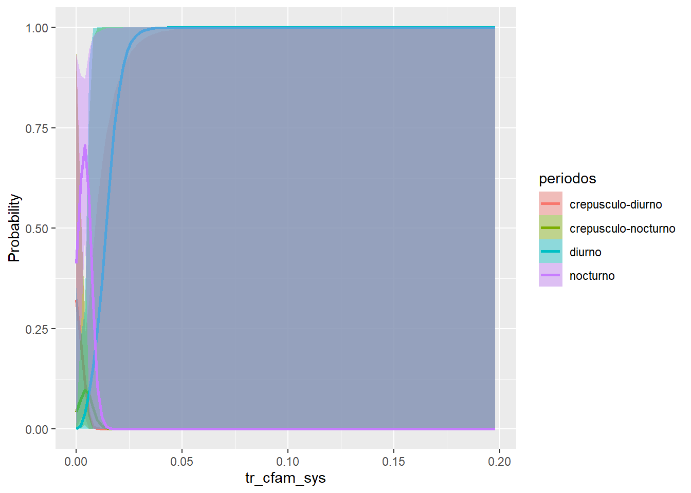
##
## $`tr_cfam_cam:cats__`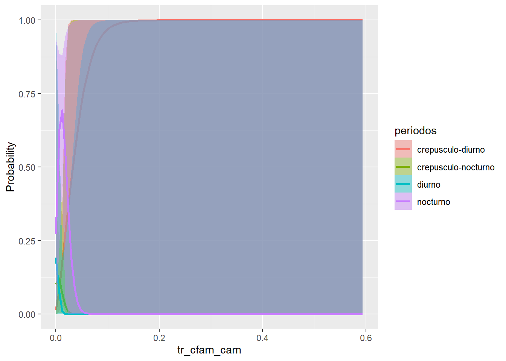
##
## $`tr_aaxi_sys:cats__`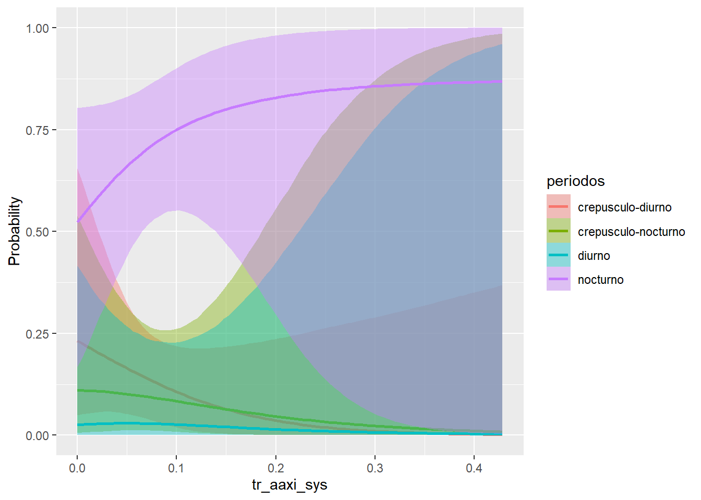
##
## $`tr_aaxi_cam:cats__`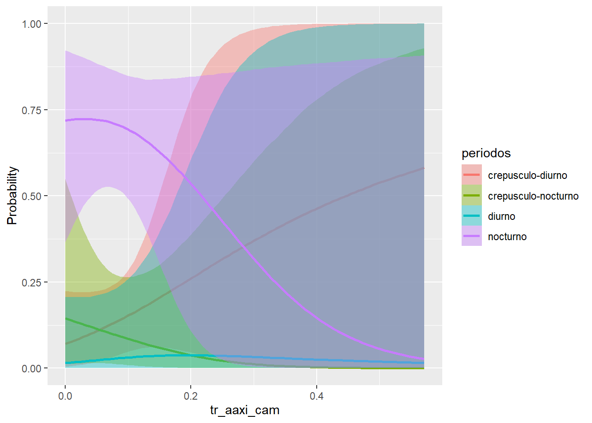
##
## $`tr_sscr_sys:cats__`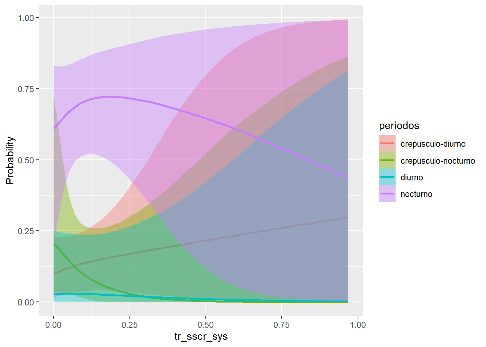
##
## $`tr_sscr_cam:cats__`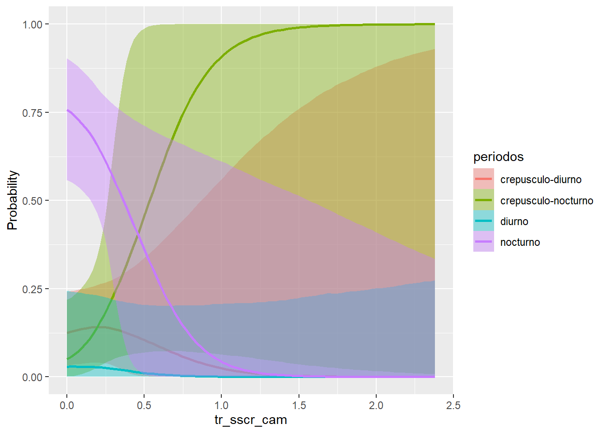
##
## $`wood_sys:cats__`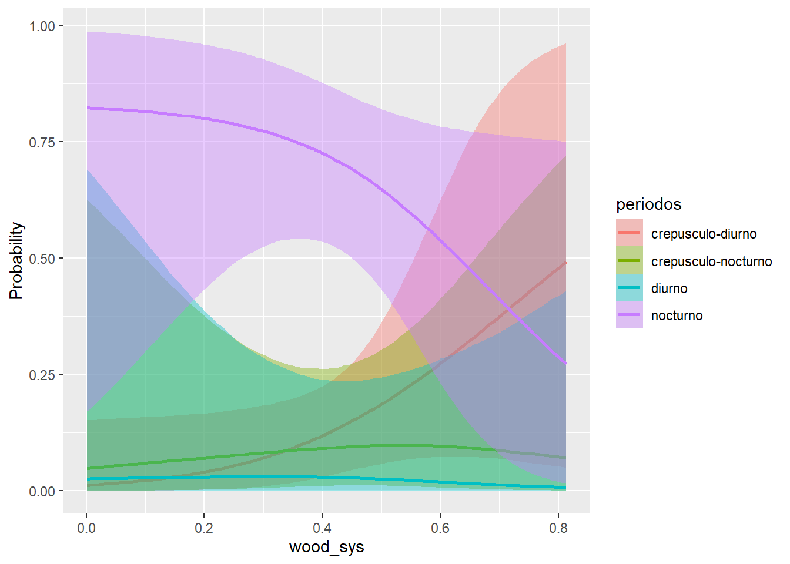
##
## $`wood_cam:cats__`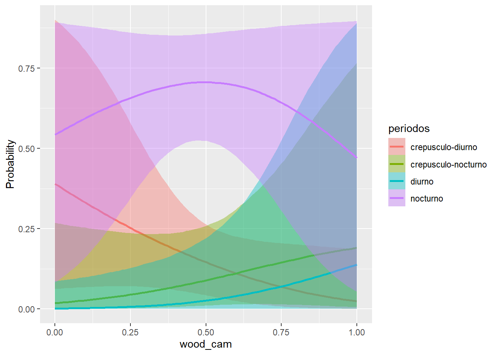
##
## $`n_tech_sys:cats__`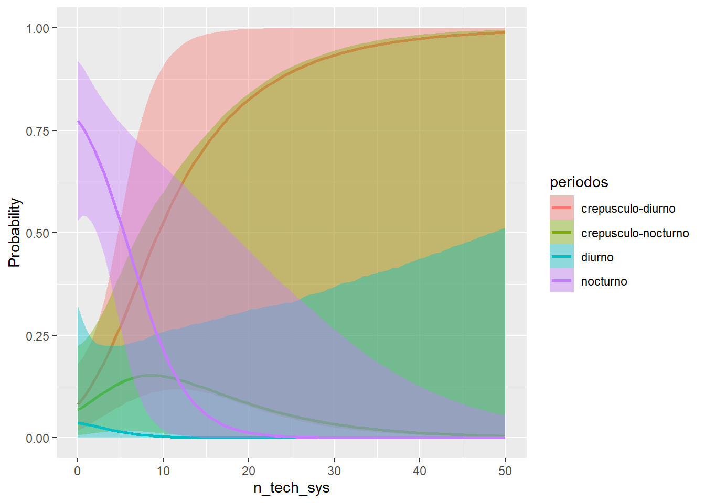
##
## $`n_tech_cam:cats__`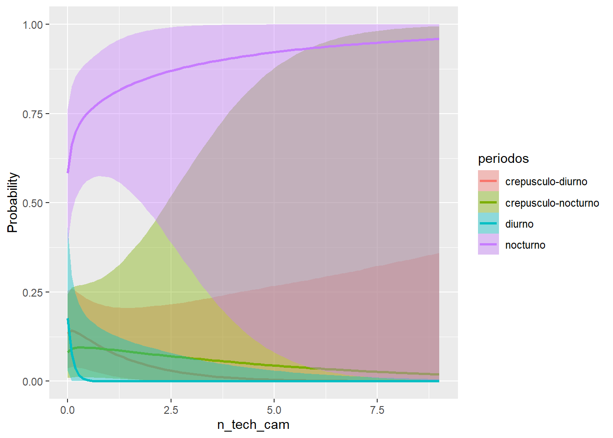
10.4 Modelo con interacciones
Una interacción que podría ser interesante es el complemento de wood y la iluminación de la luna.
data <- data %>%
mutate("wood_sys_complemento" = 1 - wood_sys,
"wood_cam_complemento" = 1 - wood_cam)modelo_interacciones <- brm(
formula = bf(periodos ~
moon_ilumination*wood_sys_complemento + # luz de luna - no wood
moon_ilumination*wood_cam_complemento +
moon_ilumination*tr_aaxi_sys + # luz de luna - axis
moon_ilumination*tr_sscr_sys + # luz de luna - jabali
moon_ilumination*tr_btau_sys + # luz de luna - btau
moon_ilumination*tr_cfam_sys + # luz de luna - perros
wood_cam_complemento*tr_aaxi_sys + # no wood - axis
wood_cam_complemento*tr_sscr_sys + # no wood - jabali
wood_cam_complemento*tr_btau_sys + # no wood - btau
wood_cam_complemento*tr_cfam_sys + # no wood - perros
tr_btau_sys*tr_axis_sys + # aaxi - btau
tr_btau_cam*tr_axis_cam +
tr_sscr_sys*tr_axis_sys + # jabalí - axis
tr_sscr_cam*tr_axis_cam +
(1 | system/camera)), # Efectos mixtos anidados
data = data,
family = categorical(refcat = "nocturno"), # familia multinomial con el nivel de referencia 'nocturno'
chains = 4, # número de cadenas
iter = 12000, # número de iteraciones
warmup = 2000, # número de iteraciones de calentamiento
control = list(adapt_delta = 0.95), # control para mejorar la convergencia
cores = 6, # nucleos de pc
threads = 12 # hilos de pc
)
save(modelo_interacciones, file = "./buckup/modelo_interacciones.RData")